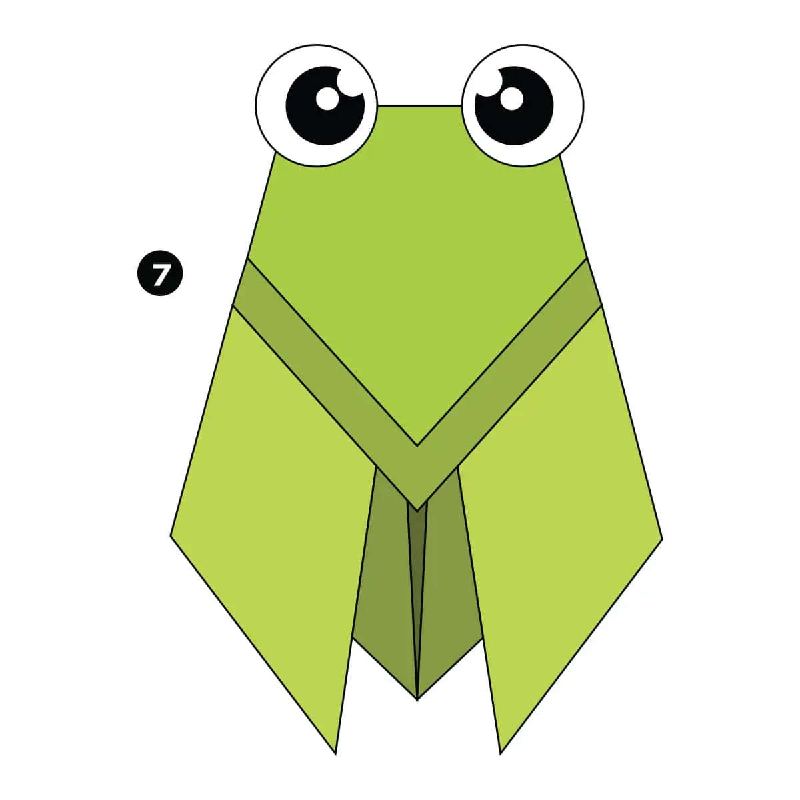

Origami Designs By Kena
About
follow Us
*If you clicked on the origami designs you can directly jump over the other website*
It you’re new to paper folding we suggest that you take a quick look at our Beginner’s Guide which will show you all the basic folds and techniques.

Some steps to make a beautiful origami camel
Camel
Step 1) Fold the paper in half.
Step 2) Fold the paper in half again.
Step 3) Open the top flap of paper over to the right.
Step 4) Squash Fold this flap down.
Step 5) Turn the paper over.
Step 6) Open the top flap of paper over to the left and Squash Fold it down.
Step 7) Fold and Unfold the sides and the top along the dotted lines. You’ll use these creases in the next step.
Step 8) Open up the top layer of paper and fold it up using the crease from the previous step.
Step 9) Fold in both sides along the existing creases making a Petal Fold.
Step 10) Turn the paper over.
Step 11) Repeat steps 7-9 on this side.
Step 12) Fold both sides to the centre along the dotted lines. Then repeat on the other side.
Step 13) Inside Reverse Fold up both sides of the paper just like in a paper crane.
Step 14) Reverse Fold the back part down to make the back legs.
Step 15) Fold the top flap of paper down and repeat on the other side to make the front legs.
Step 16) Reverse Fold the tip down to make the head.
Step 17) Inside Reverse Fold the tip of the head.
Step 18) Fold the back of the leg inside the model along the dotted line. Repeat on the other side.
you can also see a video.

Some steps to make a beautiful origami chameleon
Chameleon
Step 1) Fold and unfold the paper in half both ways. Then fold the top and bottom to the centre.
Step 2) Fold and unfold both sides to the centre.
Step 3) Fold all the corners down along the diagonal dotted lines.
Step 4) Open up each corner and Squash Fold them flat. See the next step to see how each corner looks after the Squash Fold.
Step 5) Turn the paper over.
Step 6) Fold the edges of the paper down along the dotted lines.
Step 7) Turn the paper over.
Step 8) Fold the 4 flaps of paper out along the dotted lines.
Step 9) Fold the paper in half over to the back.
Step 10) Inside Reverse Fold the paper up along the dotted line.
Step 11) Outside Reverse Fold the other side of the model down along the dotted line to form the tail.
Step 12) Make another Outside Reverse Fold on the end of the tail.
you can also see a video.

Some steps to make a beautiful origami pigeon
pigeon
Begin with a square sheet of paper rotated 45 degrees with the white site facing up.
Step 1) Fold the paper in half and then unfold it.
Step 2) Fold the paper in half the other way.
Step 3) Fold both layers of paper to the right along the dotted line.
Step 4) Fold the top layer of paper to the left along the dotted line.
Step 5) Fold the model in half down along the dotted line.
Step 6) Fold the top flap of paper up along the dotted line and then repeat on the other side.
Step 7) Fold the paper along the dotted line and then unfold it.
Step 8) Make an Inside Reverse Fold using the crease from the previous step.
you can also see a video.

Some steps to make a beautiful origami teddy-bear
teddy-bear
Step 1) Fold and unfold the paper in half both ways.
Step 2) Fold both sides in to the centre along the dotted lines.
Step 3) Fold both sides in to the centre along the dotted lines.
Step 4) Open up the paper completely.
Step 5) Fold the paper over along the dotted line.
Step 6) Fold the paper back out over to the left.
Step 7) Fold the right side of the paper over along the dotted line and then fold it back out like on the other side.
Step 8) Make a small fold on each side along the dotted lines.
Step 9) Open up the paper along the dotted lines. Lift it up and push it flat. Look at the next diagram to see the final position of this fold.
Step 10) Fold the top of the top layer of paper down along the dotted line.
Step 11) Fold both sides in along the dotted lines.
Step 12) Fold the top of the paper down along the dotted line.
Step 13) Fold the paper underneath along both the dotted lines.
Step 14) Make two Pleat Folds to form the ears.
Step 15) Fold the paper in half a little bit to make the model a bit 3D.
You can also see a video.

Some steps to make a beautiful origami panda
Panda
Step 1) Fold and unfold the paper in half both ways.
Step 2) Fold both sides in along the dotted lines.
Step 3) Fold and unfold the bottom and top along the dotted lines.
Step 4) Fold the paper behind along the dotted line.
Step 5) Turn the paper over.
Step 6) Fold the top of the paper down along the dotted line.
Step 7) Fold the paper up along the dotted line.
Step 8) Fold and unfold the paper in half and leave slightly folded to give a 3D look.
You can also see a video.

Some steps to make a beautiful traditional origami cicada
Traditional Flying cicada
Step 1) Fold the paper in half.
Step 2) Fold both sides up along the dotted lines.
Step 3) Fold both these flaps down along the dotted line.
Step 4) Fold the top layer of paper down along the dotted line.
Step 5) Fold the bottom layer of paper down along the dotted line.
Step 6) Fold both sides in behind the model along the dotted lines.
You can also see a video.